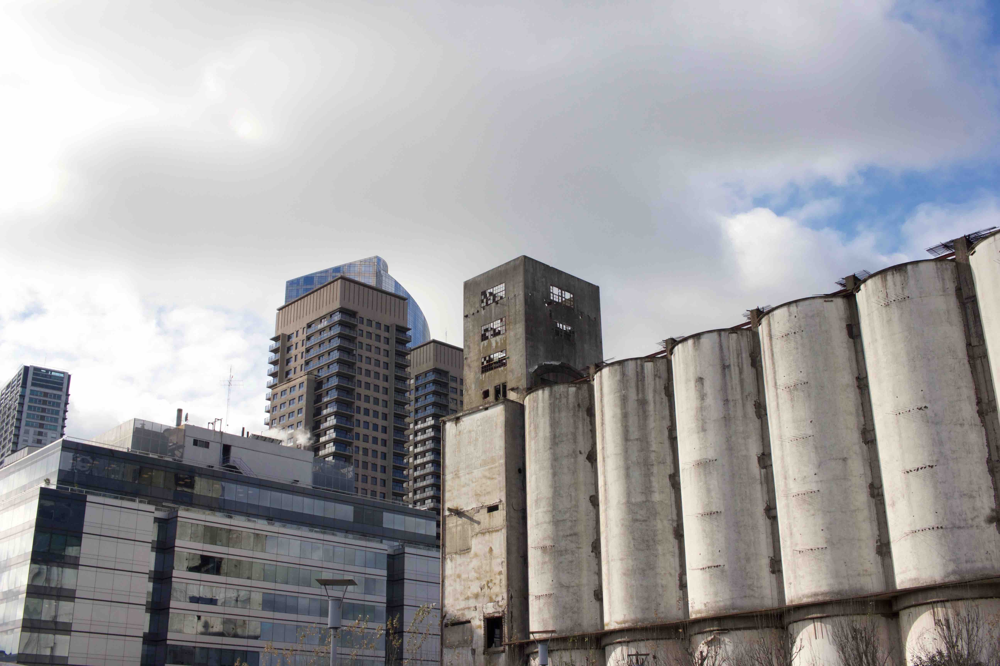
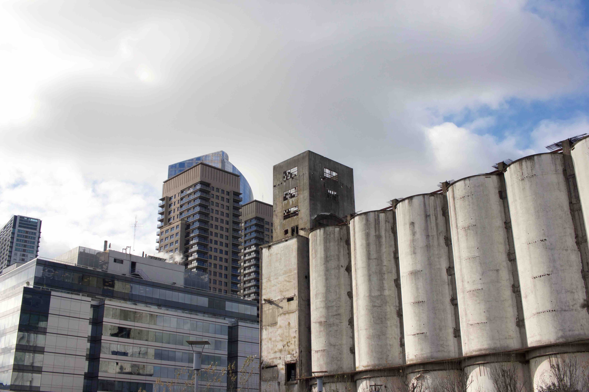

BUENOS AIRES
san telmo, puerto madero, & la feria de mataderos
The house we're staying at is tucked away on a quiet street named Chile in the Balvanera neighborhood of the city. The building is a casa chorizo — long and skinny stacks of shotgun rooms with patios running their lengths — full of white stone, plants, and light. It also, luckily, has two very sweet cats, Tita and Mollo, who are very demanding of affection.

From the house we can walk five blocks down to Avenida Jujuy to get on the Subte (subway). We're one transfer away from la Plaza de Mayo and the Casa Rosada.

We walked from the Plaza de Mayo to the Obelisco, to say we'd seen it, and found a square full of tourists taking photos of the Obelisco, which I suppose is to be expected.

On Sundays a street named Defensa turns into la Feria de San Telmo, a very long street market full of people selling handcrafted and souvenir-y things: mates, hand-painted signs, fancy knives for eating steak like a gaucho. It's also a great place to do some people watching.


The Recoleta neighborhood is full of all the bougie, old-money people, who are waiting their turn to be buried in their family's crypt in the Cementario de la Recoleta. The Cementario is fascinating and terrifying, beautiful and haunting, filled with crypts big and small in every state of high-polish and disrepair. We saw the Duarte family crypt where Eva Perón is buried, and spent some time reading hand-written notes people had left there.
Recoleta also has a super colorful and interesting Centro Cultural, where we got to see a few installations by Latin American artists and play cards in the sun


A very fancy bridge divides downtown from Puerto Madero, a waterfront neighborhood that used to be full of warehouses and factories but now is full of upscale condos, where we walked and explored the Reserva Ecológica, and got a nice view of the Río de la Plata.
 



words words words
words
words words


words words words
words
words words